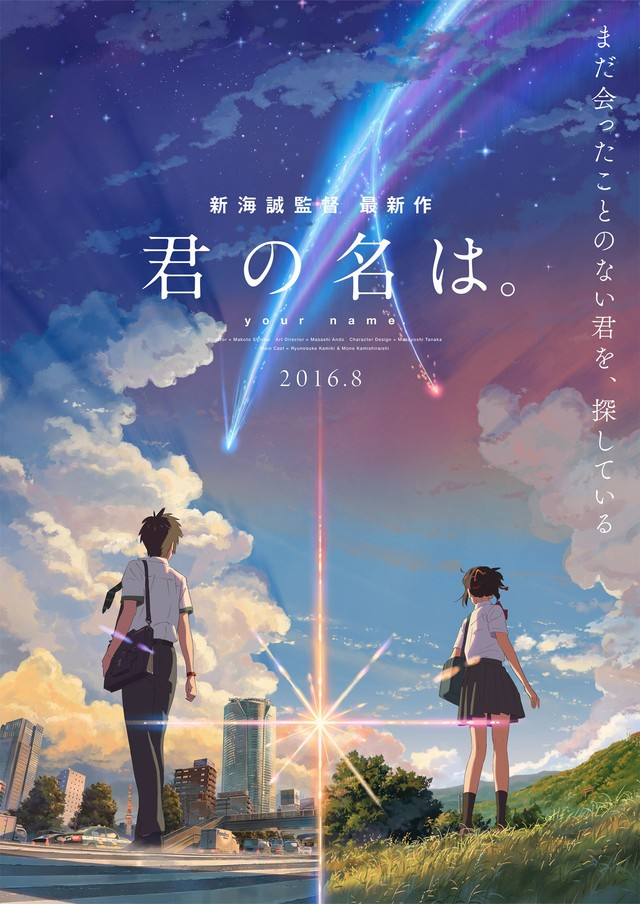

小浣熊
你的名字

| 导演 | 新海诚 | 编剧 | 新海诚 |
|---|---|---|---|
| 国家 | 日本 | 发行商 | 华夏 |
| 豆瓣评分 | 8.5 | IMDB评分 | 8.7 |
-
神木隆之介
Kamiki Ryunosuke
饰 立花泷
-
上白石萌音
Mone Kamishiraishi
饰 宫水三叶
-
长泽雅美
Masami Nagasawa
饰 奥寺美纪
-
市原悦子
Etsuko Ichihara
饰 宫水一叶
故事背景发生在适逢千年一遇彗星到访的日本，生活在日本小镇的女高中生三叶对于担任镇长的父亲所举行的选举运动，还有家传神社的古老习俗感到无聊乏味，对大城市充满憧憬的她，甚至幻想着“下辈子让我生做一个东京帅哥吧！”忽然有一天自己做了个变成男孩子的梦，在陌生的房间，面对陌生的朋友，以及东京的街道。虽然感到困惑，但少女对于能来到朝思暮想的东京还是充满喜悦。 与此同时，生活在东京的男高中生立花泷也做了个奇怪的梦，他在一个从未去过的深山小镇中，变成了女高中生。少男少女就这样在梦中邂逅了彼此，并带着“不论你在世界何方我一定会去见你”的信念去寻找彼此。没错，这就是一个互换身体的奇迹故事，那么少男少女这个奇妙的梦到底是什么原因？他们最终又会迎来什么样的结局呢？